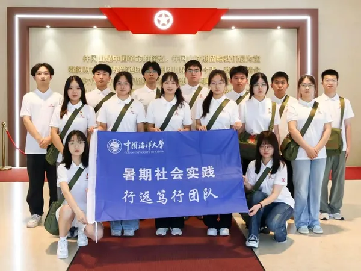

03 / FIELDWORK & MEDIA
星火寻访
标语寻访与融媒传播
循着墙上的文字进入真实地点，用拍摄、访谈与史料核验记录标语的保存状态，也记录它们今天如何被重新讲述。
01 / CAMPUS校园推送
把三下乡的见闻，讲给校园里的你我
从学校公众号出发，记录实践足迹，让更多人看见青年如何走进红色土地。

02 / LESSONS革命小课文学习
每日一课：在井冈山读一篇革命小课文
用镜头记录每天学习的革命小课文，让经典文字在历史现场重新发声。
03 / PRESS新闻推送
媒体关注：井冈山上的青年答卷
聚焦权威媒体报道，记录研习团从校园课堂走向红色摇篮的实践足迹。

大学生云报 · 2026-07-30
海大学子在井冈山上寻找"强军"答案
从校园课堂到井冈山革命摇篮，中国海洋大学"信火追源"研习团用脚步丈量红色土地，在标语旧墙和革命旧址间探寻"强军"的历史答案。
阅读全文 →从现场记录继续走向研究
将寻访采集的照片、访谈和手记沉淀为可引用、可核验的阶段成果。